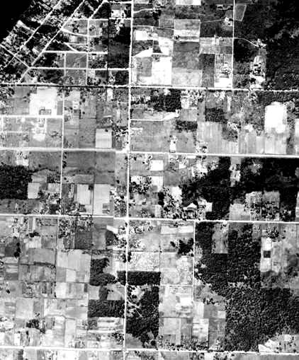
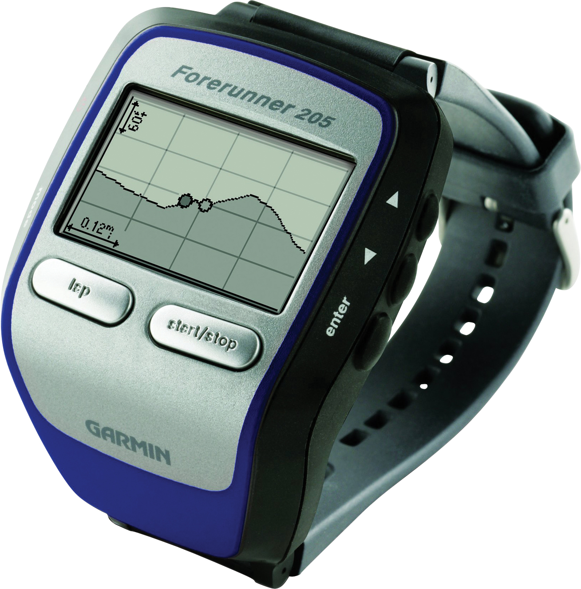

Week 14:
Data Standards and Quality
and
New Developments in GIS
Intro to GIS
Evan Lue, PhD
Why Standards?
Have you ever asked...
- Where did I save my files?
- What's the difference between "Geocoding_Result_2.shp" and "Geocoding_Result_3.shp"?
- What do these columns represent?
- And many more
Types of Standards
- Data standards - format, assess, document, and deliver spatial data
- Interoperability standards - how data is served between different software/hardware systems
- Analysis standards - appropriateness and best result possible
- Professional/certification standards - education/knowledge of the GIS professional
The Best Standards...
are the ones you consistently use.
Official Bodies
FGDC - standards in the United States
Open Geospatial Consortium (OGC) - global and open
Geospatial Technology Competency Model (GTCM)
Department of Labor
Bolstad 2012, Fig 14.1
Standards in Accuracy
Two images of the same landscape over time
Bolstad 2012, Fig 14.2
Types of Accuracy
Bolstad 2012, Fig 14.3
Accuracy vs Precision
Bolstad 2012, Fig 14.4
Horizontal Error
Bolstad 2012, Fig 14.5
Distribution of Error
These two graphs show the same mean, but one represents a more accurate dataset
Bolstad 2012, Fig 14.6
Horizontal Error Example
The DOQ represents true position

Bolstad 2012, Fig 14.7
Zoomed In Example
Bolstad 2012, Fig 14.9
Measuring Error
This must be the 4th time you've seen this...
Bolstad 2012, Eq 14.1
Sampling Error
d is the longest distance in the data's extent
Bolstad 2012, Fig 14.8
Accuracy Assessment Summary Table
Bolstad 2012, Table 14.1
Lines Are Trickier
The epsilon band contains the true location with confidence
Bolstad 2012, Fig 14.10
Error Uniformity
Error is not necessarily uniform along a line
Bolstad 2012, Fig 14.11
Error Tables
Also known as a confusion matrix

Bolstad 2012, Fig 14.12
New Developments in GIS
Smaller Technology
Less power needed
Bolstad 2012, Fig 15.1
Wearable Technology
Getting more and more fashionable, too
Bolstad 2012, Fig 15.2
Mobile Data Collection Systems
Collecting a variety of data at once
Bolstad 2012, Fig 15.5
Heads-Up Display
Bolstad 2012, Fig 15.6
Augmented Reality
Updates to Datums and Coordinate Systems
NAD83 to be replaced by 2022!
Advancements in Satellite Imagery
Bolstad 2012, Fig 15.8
UAVs
Unmanned Aerial Vehicles / Drones
Bolstad 2012, Fig 15.10
Cloud-Based GIS
ArcGIS.com is an example
Open Source GIS
Including tools like Leaflet
Indoor
For example, Project Tango
Other Thoughts
- 3D
- Real-Time
- Big Data
- Crowdsourcing
Speaking of Crowdsourcing...
- April 25, 2015
- 7.8-magnitude quake in Nepal
- 4K+ fatalities
- 8M affected
There is a very large community of people who try to help in times of disaster using GIS. For more info, check out CrisisMappers, HOT, and Tomnod